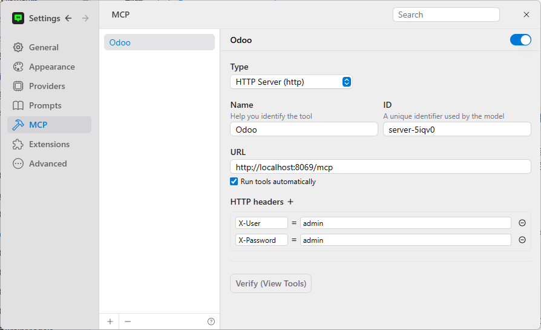
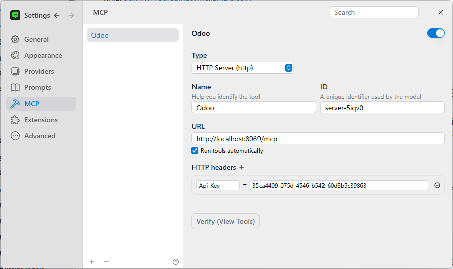

Connect Odoo to AI Agents with One Decorator. Transform your Odoo into a Model Context Protocol (MCP) Server for seamless integration with Claude, ChatGPT, Cursor and other AI agents.
@mcp_tool, AI Integration, MCP Server, Automation
@mcp_tool def search_customers(self, name: str): """Search customers by name.""" # That's it! No config, no schema - just decorate and go
Type hints → JSON Schema Docstring → Descriptions Zero configuration
The simplest decorator to expose Odoo methods to AI agents. Just add it and go - no complex setup required.
Just @mcp_tool. Your methods are instantly AI-ready.
Automatic JSON schema from type hints and docstrings. No manual work.
Per-tool access control on top of standard Odoo ACL — control exactly which AI agents see which tools.
Streamable HTTP, JSON-RPC 2.0, enterprise-grade reliability.
Choose the workflow that fits your team — developer-friendly decorators or admin-friendly UI.
Write Python methods and tag them with @mcp_tool. The framework auto-discovers them on startup:
@api.model and model inheritanceDefine tools directly in the Odoo UI — no Python required. Two entry points:
1) Settings → Technical → MCP Framework → Tools (global list)
2) Settings → Technical → Database Structure → Models → MCP Tools tab (scoped to that model)
Download and install the mcp_base module to your Odoo instance:
mcp_base-x.x.x.zip
mcp_base folder to your Odoo addons path, for example:/opt/odoo/addons/mcp_base (Linux) or C:\Program Files\Odoo 15.0\server\addons\mcp_base (Windows)/etc/odoo/odoo.conf (look for addons_path)C:\Program Files\Odoo 15.0\server\odoo.conf
?debug=1 to your URL (e.g., http://localhost:8069/web?debug=1)Add the @mcp_tool decorator to any Odoo model method you want to expose to AI agents:
from odoo import models from odoo.addons.mcp_base import mcp_tool class ResPartner(models.Model): _inherit = 'res.partner' @mcp_tool def search_customers(self, name: str, limit: int = 10): """Search customers by name. :param name: Customer name to search for :param limit: Maximum number of results """ return self.search_read([('name', 'ilike', name)], fields=['name', 'email'], limit=limit)
Configure your AI client to connect to the MCP server endpoint and set up one of the authentication methods below:
Your MCP Endpoint:
http://your-odoo-server:8069/mcp
Authentication (choose one):
X-User: your-loginname and X-Password: your-password
Authorization: Basic <base64-credentials>
auth_api_key module installed, add Api-Key: your-api-key-here
Popular AI Clients:
Settings → MCP → Add Server
Settings → MCP → Add Server
Edit config.json
Your Odoo methods are now accessible to AI agents. Start asking natural language questions about your data!
Three authentication options — plain text, Basic Auth, or API keys.
The simplest method — just set two headers with your Odoo username and password. No base64 encoding required.
X-User: your-loginname X-Password: your-password

Claude Desktop example:
{
"mcpServers": {
"odoo": {
"url": "http://localhost:8069/mcp",
"transport": "streamable-http",
"headers": {
"X-User": "your-loginname",
"X-Password": "your-password"
}
}
}
}
Standard Authorization: Basic <base64-credentials> is also supported as a fallback:
{
"mcpServers": {
"odoo": {
"url": "http://localhost:8069/mcp",
"transport": "streamable-http",
"headers": {
"Authorization": "Basic <base64(username:password)>"
}
}
}
}
For enhanced security, install the auth_api_key module to use API keys instead of passwords:
Download from Odoo App Store.
Add header: Api-Key: your-api-key-here
{
"mcpServers": {
"odoo": {
"url": "http://localhost:8069/mcp",
"transport": "streamable-http",
"headers": {
"Api-Key": "your-api-key-here"
}
}
}
}

Note: When you provide an Api-Key header (with auth_api_key installed), it takes priority. Without it, plain text or Basic Auth credentials are accepted as fallback.
Install Odoo MCP Framework and expose your first method with @mcp_tool in under 2 minutes.